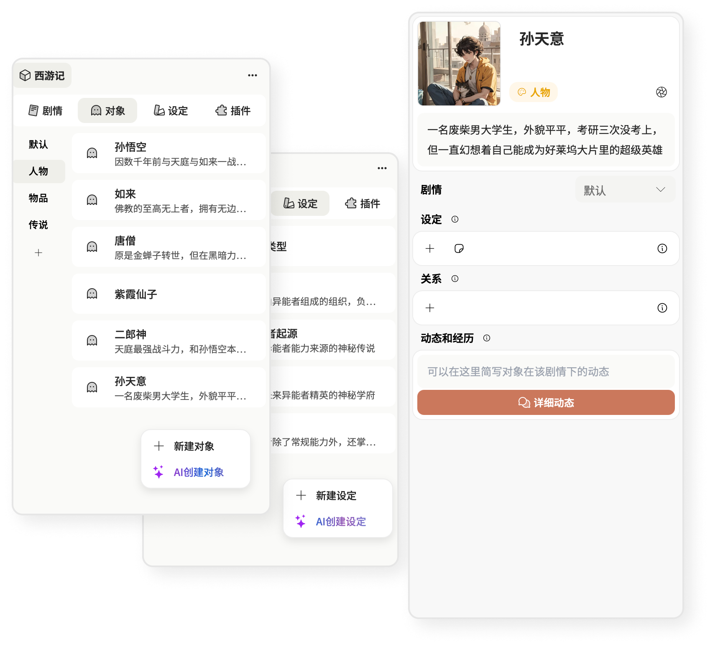

随时迸发，无畏瓶颈
芥子的AI可以介入创作中的任何一个环节，无论是人物设定、情节构思、章节生成、章节大纲生成、风格化续写，芥子可以为你任何阶段的灵感提供AI协助。
AI构思情节
在芥子中，你可以随时用AI创建情节，AI将会基于你创建的世界观为你提供灵感

AI生成章节
不喜欢AI一键生成的情节？ 芥子通过AI帮助你把精心设计的情节、角色转为章节大纲及正文，让你的灵感落地
AI续写正文
在芥子中，你可以选择你喜欢的文字风格进行写作或续写，我们提供所有的基础需求，你可以直观地控制AI

AI创建对象
任何时候你都可以使用AI创建角色、物品、世界观设定，AI将基于现有的所有内容为你提供灵感
